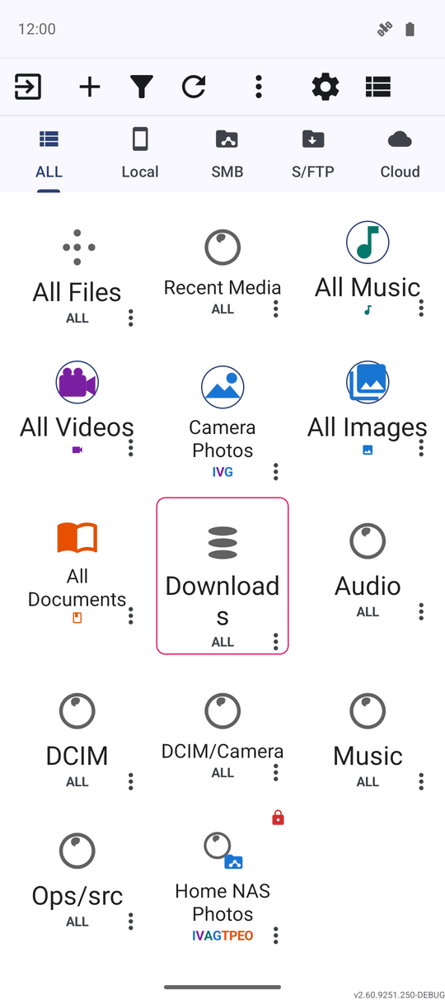
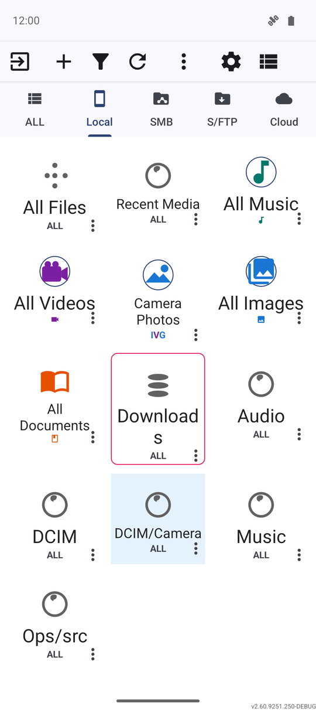
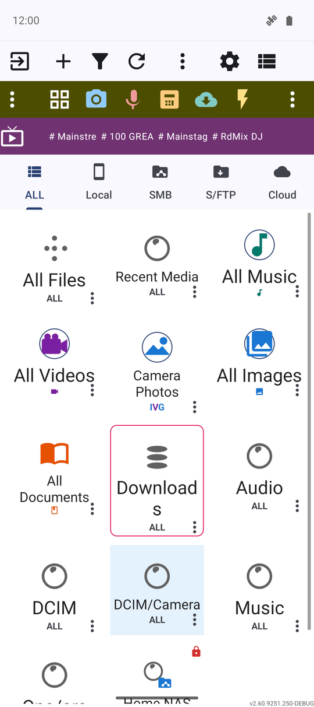
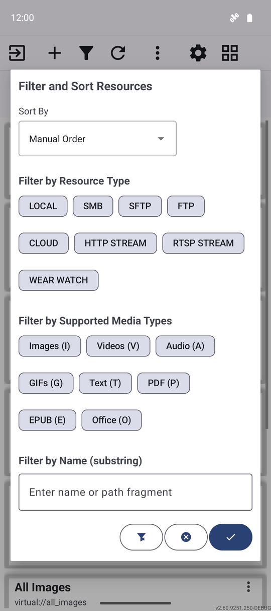
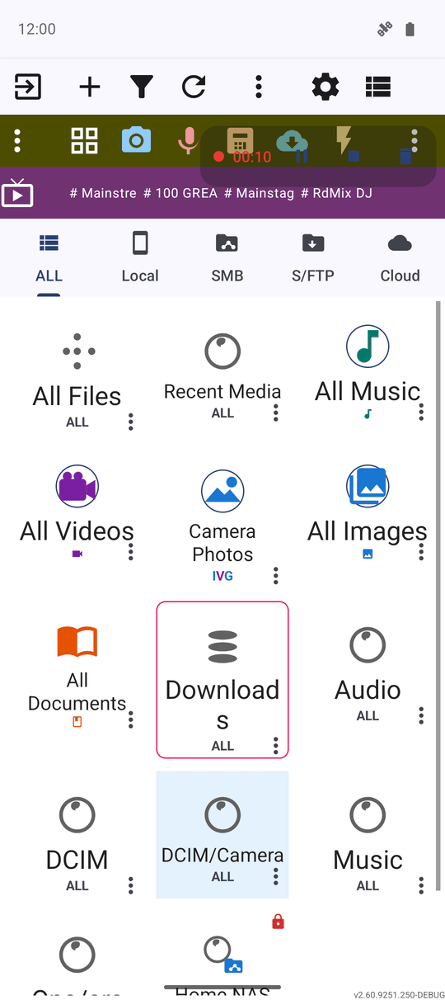

Обзор главного экрана
Главный экран - ваш командный пункт: список ресурсов с закреплённым первым пунктом «Все файлы», панель команд, которая всегда умещается на экране, адаптивные вкладки и панели, а также диалог фильтрации и сортировки, запоминающий ваши предпочтения, с удобным индикатором активной записи в углу.
Почему вам это понравится
С главного экрана начинается и обычно им же заканчивается каждый сеанс работы с FastMediaSorter. Этот экран должен быть понятен с первого взгляда, независимо от того, сколько у вас ресурсов - три или тридцать: локальная папка на смартфоне, домашний сетевой диск или подборка интернет-трансляций. Понимание того, за что отвечает каждый элемент интерфейса, сэкономит вам немало времени при каждом запуске приложения.
Информация на этой странице не меняет файлы на диске. Это обзорный путеводитель по главному экрану, а не пошаговая инструкция к действию.
- ✓ FastMediaSorter в любой редакции: Standard, noLegal, Lite, Photos, Legacy, VR или FOSS. Пара описанных здесь элементов - панель потоков и фильтр сопряжённых часов - доступны только в редакциях с поддержкой трансляций или часов на Wear OS.
- ✓ Хотя бы один добавленный ресурс, чтобы списку и панелям было что показать. Если вы ещё ничего не добавили, загляните в рецепт Настройка локальных и съёмных хранилищ.
Список ресурсов
Ваши ресурсы — папки, сетевые папки, облачные аккаунты, потоковые трансляции и всё остальное, что вы добавили, — отображаются в виде строк или плиток в списке ресурсов. Ресурс Все файлы (в тех редакциях, где он есть) всегда закреплён первым, как бы вы ни сортировали остальные элементы, если только вкладка или активный фильтр не скрывают его целиком.
Чтобы упорядочить остальные ресурсы, зажмите нужный элемент пальцем и перетащите его на новое место; приложение запомнит ваш порядок. Нажмите кнопку Вид на панели команд, чтобы переключить отображение списка между строками (список) и карточками (сетка).

Панель команд в верхней части экрана
Ряд кнопок над списком — Выход, Добавить, Фильтр, Обновить, Настройки, Вид, Избранное и Запуск плеера — доступен всегда, хотя текстовые подписи к ним могут скрываться. На узких экранах подписи исчезают первыми, чтобы поместились все значки; если же не помещаются даже значки, крайние правые кнопки по очереди переносятся в меню Ещё (три точки), так что ни одна команда никогда не обрезается за краем экрана.
Команда, перемещённая в меню с тремя точками, работает точно так же, как и на панели — просто для неё требуется одно дополнительное касание. Всё, что доступно на широком экране, остаётся доступным и на компактном телефоне.
Фильтрация по типу с помощью вкладок
Прямо под панелью команд располагается панель вкладок по типам ресурсов — ВСЕ и Локальные, а в поддерживающих их редакциях также SMB, S/FTP и Облако. Одно касание вкладки мгновенно оставляет в списке только ресурсы выбранного типа. Вкладки автоматически делят доступную ширину экрана между собой, поэтому каждая из них (включая «Облако») остаётся видимой и удобной для нажатия как в портретной, так и в альбомной ориентации.

Панели программ и трансляций
Над списком ресурсов могут отображаться две дополнительные панели: панель программ для быстрого запуска встроенных инструментов приложения (см. Встроенные программы) и (в редакциях с поддержкой потоков) панель трансляций для закреплённых каналов (см. Просмотр каталога интернет-трансляций). Обе панели можно включить или выключить в настройках.
На широких экранах обе панели и полоса вкладок выстраиваются по единой сетке, ориентируясь на ширину кнопок панели программ. Если же экрану не хватает ширины для полного отображения панели, её значок сворачивается в компактную кнопку-чип в свободном месте панели команд, не занимая лишней строки, — за исключением случаев, когда панель команд уже полностью заполнена.

Сортировка и фильтрация списка ресурсов
Нажмите кнопку Фильтр, чтобы открыть диалог Фильтрация и сортировка ресурсов. В нём можно отфильтровать список по типам ресурсов, по поддерживаемым типам медиафайлов и выбрать порядок сортировки. В редакциях Standard и noLegal также доступен фильтр ресурсов сопряжённых часов.
Выбранные параметры запоминаются и применяются при каждом следующем запуске приложения — даже после принудительной остановки или перезагрузки устройства. Информационный баннер над списком всегда напомнит, какие фильтры активны в данный момент, чтобы сократившийся список не выглядел как пропавшие ресурсы. Подробнее: Сортировка, фильтрация и быстрый поиск.

Хотите сделать карточки крупнее или компактнее? Откройте «Настройки» → «Общие» и выберите размер ячеек сетки: «Маленький», «Средний» или «Большой». Масштаб адаптируется под количество колонок на вашем экране и текущую ориентацию.
Действия с отдельным ресурсом — меню с тремя точками
Откройте меню с тремя точками на строке любого ресурса, чтобы получить доступ к дополнительным действиям: переименованию, удалению и пункту Переподключить ресурс для папки, доступ к которой требуется обновить. Если выбранная при переподключении папка отличается от исходной, появится диалог с просьбой перепроверить выбор — при этом диалог сохраняется на экране даже при повороте устройства, не исчезая самопроизвольно.
Индикатор активной записи
Во время записи экрана или быстрой записи голоса в углу экрана отображается компактный плавающий индикатор — точка, таймер и кнопки паузы/возобновления и остановки. Это позволяет контролировать или останавливать запись, не покидая главный экран. Индикатор корректно отображается и на широких горизонтальных экранах (например, на автомобильных головных устройствах). См. рецепт Запись экрана устройства со звуком.

Что вы получите
Вы ориентируетесь в списке ресурсов, можете вызвать любую команду независимо от размера экрана, умеете быстро фильтровать список с помощью вкладок и диалога фильтров, всегда видите активный процесс записи и знаете, как переподключить ресурс при необходимости.
Советы и решение проблем
- Встроенные ресурсы говорят на вашем языке. Папки «Недавние медиа», «Вся музыка», «Все файлы», «Загрузки» и другие готовые коллекции мгновенно переименовываются при смене языка в приложении, не оставаясь на языке первого запуска.
- Свежая установка сразу показывает реальные цифры. Количество файлов во встроенных коллекциях подсчитывается в фоне вскоре после установки, а не висит нулями до первого открытия каждой папки.
- Кнопка «Программы» всегда отцентрована. Значок и подпись аккуратно выровнены по центру своей ячейки как в стандартном, так и в компактном варианте панели команд.